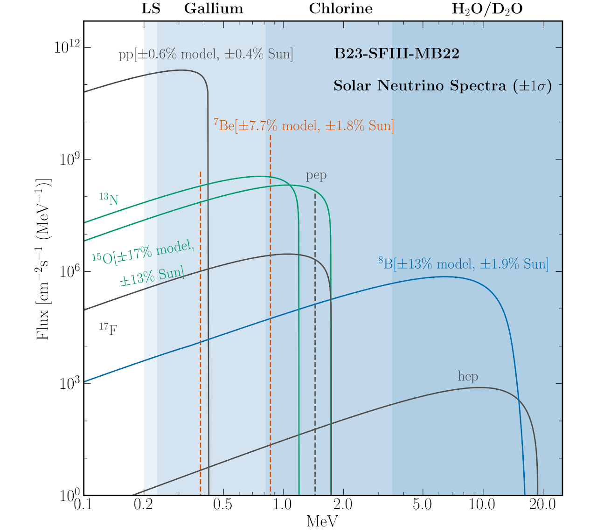

Solar Physics
& Neutrinos
Standard solar models, helioseismology and solar neutrinos as complementary probes of the solar interior.
Explore this area →My work uses stellar evolution models tested against observations, connecting the physics of stellar interiors with nuclear physics, neutrinos and the history of our Galaxy.
Standard solar models, helioseismology and solar neutrinos as complementary probes of the solar interior.
Explore this area →Stellar structure and evolution, using seismic and spectroscopic observations to constrain ages and fundamental parameters.
Explore this area →Connecting stellar ages and chemical abundances to the evolution of stellar populations and the Milky Way.
Explore this area →
Model outputs, documentation and citation instructions are collected separately from research descriptions. Each scientifically distinct resource has its own collection page.
Standard Solar Models B23 →Nuclear and particle physics enter through solar fusion and neutrinos; stellar ages and chemical abundances connect stellar interiors with exoplanets and Galactic archaeology.
Projects & collaborations →